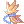
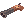
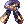

Rock Ridge
Rock Ridge
Rock Ridge was founded on the ideals of innovation, opportunity, and industry. Set against the beautiful backdrop of an arid desert landscape bordering a vast ocean, Rock Ridge transformed into a booming village filled with opportunity - all thanks to the industrious efforts of Pink Rose.
Fistful of Zeny
| Requirements | |
|---|---|
| Base Level: | 100 |
| Starting Point: | alberta 240/103 |
| Rewards | |
| Experience: | 62,500,000 (Base) and 30,000,000 (Job) |
| Items: | 200  Rock Ridge Coin Rock Ridge Coin
|


- Speak with Karam Pucci in Alberta at and and accept his mission.
- You'll find Costello waiting for you at the port's entrance. He tells you more about Rock Ridge and about a problem with the Buffalo Bandits.
- Find the Sheriff Wyatt Warp, he can be found inside the Sheriff's building at .
- Talk to the Sheriff. You'll learn that the bandits only want to negotiate with Costello.
- Go back to Costello and give him the news. He would rather have you negotiate on his behalf.
- Report to the Sheriff and you'll be asked to join the meeting yourself near the unmoving freight train.
- Exit the Sheriff's office and walk to the east map. You need to reach .
- After the cutscene (your choices do not change the outcome of the storyline), go back to the Sheriff's office.
- Speak with Ivoka Skudi and then speak with the Sheriff.
- Go to the basement (top right portal in the Sheriff's office).
- Talk to Johnny James in his cell and make him believe Albert Ford betrayed him.
- Report back to the Sheriff, he tells you that McCurdy has a good bargaining chip.
- Find Shawn McCurdy in the plaza .
- Meet him at the mines. You can get there by going two maps east of Rock Ridge. He is on the far east side of the map .
- After speaking to him, he'll be able to enter the mine. Speak with him once more inside the cave.
- Go further in the mine and destroy a Purple Ore. You will get a Purple Ore.
- Speak with Shawn McCurdy again to leave the cave.
- Walk up towards the entrance dungeon (but don't go inside!) and you'll find a Concaved Rock nearby.
- Select the Knock, knock, knock signal and Albert Ford will show up! Speak with him and he'll give you his  Buffalo Bandit Mane.
- Go back to Johnny James in the Sheriff's prison and show him the mane. He tells you where the ores are hidden.
- Report the news to the Sheriff.
- Go back to Shawn McCurdy near the mine and he'll let you inside again. Talk with him again once you're inside.
- Go further in the mine and you'll see the Broken Elevator where the ores are hidden. Click it.
- Three bandits will spawn, kill them all and click the elevator again. You'll get the Purple Ore Crate.
- Exit the cave by speaking with Shawn McCurdy and he'll ask you to collect the following items (these all drop from the bandits):
- 5x
 Brown Mufflers
Brown Mufflers - 5x
 Bandit Scarves
Bandit Scarves
- 5x
- You will also need to kill 3 of each Buffalo Bandits.
You have to hunt the Buffalo Bandits from both maps (rockrdg1 and rockrdg2). Once you walk out of the cave, you will also have to go back to the map west to find the third type of Buffalo Bandit. - Once you've collected the items and killed all the mobs, go back to the Concaved Rock and then speak with Albert.
- Go back to the Sheriff and choose a ring! You've completed the mission and unlocked more dailies.
Spotty and Her Ring
| Requirements | |
|---|---|
| Base Level: | 100 |
| Starting Point: | harboro1 347/65 |
| Rewards | |
| Experience: | Variable |
| Items: | 5 Rock Ridge Coin
|
- Speak with Mrs. McPhy at
harboro1 347/65. - Move out to the map east and you'll meet Mr. McPhy at the entrance.
- The ring can be found at
rockrdg1 43/145. It is alongside the left side fence, at the bottom. - Go back to Mrs. McPhy in Rock Ridge. She will reward you with 5 Rock Ridge Coin and some experience.
You have unlocked the Spotty stole from her! and the Spotty stole from him! dailies.

Rock Ridge Shops
Weapon Dealer
[[File:rrin_01.png|right] The Weapon Dealer (
/navi har_in01 19/86) exchanges zenies for some weapons and other consumables.
Shotguns
- Rolling Stone - 12,000 Z
-  Black Rose - 32,000 Z
- Death Fire - 1,250,000 Z
Rolling Thunder - 1,350,000 Z
Peace Breaker - 1,950,000 Z
Revolvers
Crimson Bolt - 20,000 Z
- Heaven's Feather & Hell's Fire - 1,200,000 Z
- Altea & Ares - 1,450,000 Z
Armor Dealer
The Armor Dealer (
/navi har_in01 16/84) sells a limited amount of headgears every week. These are random but related to the theme of Rock Ridge (Western).Examples of what he may sell:
Affable Lady
The Affable Lady (
/navi har_in01 24/69) exchanges zenies for some armors unique to Rock Ridge.

Item Cost Description  Elemental Cape
Elemental Cape
3,000,000 Z Flee +10. Every 3 upgrade levels, additional Flee +5. Reduces damage taken from Neutral property attacks by 10%. If upgrade level is +9 or higher, ASPD +5%.
If equipped with Elemental Origin and Elemental Robe, adds a 5% chance of casting Fire Ball Lv 5 on the target when performing a magical attack. If a higher level of Fire Ball is learned, it will be cast instead. Adds a 6% chance of buffing the user with MATK +50 for 1 minute when using Double Bolt.
Sorcerer only.
 Golden Scarf 3,000,000 Z Flee +20 If upgrade level is +7 or higher, long-ranged damage +5%.
If upgrade level is +9 or higher, additional long-ranged damage +5%.
If equipped with Golden Ninja Suit and Huuma Shuriken of Dancing Petals, Swirling Petal cooldown -1 second, long-ranged damage +15%.
If equipped with Golden Ninja Suit and Monokage, Kunai Explosion damage +20%, Kunai Splash damage +50%.
Kagerou and Oboro only.
 Mine Worker's Backpack
Mine Worker's Backpack
3,000,000 Z ASPD +5%. Every 2 refine levels, additional ASPD +1%. If upgrade level is +9 or higher, ATK +20.
If equipped with Mine Worker's Pickaxe and Mine Worker's Vest, ATK +5%, ASPD +10%, Critical damage +10%.
Mechanic only.
 Vigilante Badge
Vigilante Badge
1,500,000 Z Flee +10, long-ranged damage +5%. If equipped with Vigilante Bow and Vigilante Suit, Double Strage damage +50%, Triangle Shot SP cost -10.
Shadow Chaser only.
 Hippie Feather
Hippie Feather
1,500,000 Z Flee +5, Crit +5. If equipped with Hippie Clothes and Hippie Guitar, ATK +30, ASPD +1, Critical damage +20%.
If equipped with Hippie Clothes and Hippie Rope, ATK +30, ASPD +1, Critical damage +20%.
Maestro and Wanderer only.
Rock Ridge Cards
| Card | Type | Effects |
|---|---|---|
| Accessory (Left) Card | AGI +7, HIT +7.
If equipped with Revolver Buffalo Bandit Card, STR +3, ATK +3%. | |
| Accessory (Right) Card | STR +4, ATK +4%. | |
| Weapon Card | ATK +5, MATK +5.
If compounded into Dagger type weapon, and if refined to +10 or higher, additional ATK +20, MATK +20. If refined to +14 or higher, additional ATK +20, MATK +20. If equipped with Shotgun Buffalo Bandit Card, increase physical and magical damage against Small size enemies by 15%. | |
| Weapon Card | Spread Attack damage +10%.
If refined to +10 or higher, additional Spread Attack damage +20%. If refined to +14 or higher, additional Spread Attack damage +20%. If equipped with Shotgun Buffalo Bandit Card, additional Spread Attack damage +50%. | |
| Weapon Card | Rapid Shower damage +10%.
If refined to +10 or higher, additional Rapid Shower damage +20%. If refined to +14 or higher, additional Rapid Shower damage +20%. If equipped with Revolver Buffalo Bandit Card, additional Rapid Shower damage +50%. | |
| Weapon Card | Increase physical and magical damage against Small size enemies by 10%.
If equipped with Scimitar Buffalo Bandit Card, increase physical and magical damage against Small size enemies by an additional 10%. | |
| Garment Card | Every 10 base STR, ATK +3 and ASPD +1%.
If base STR is 120 or higher, additional ATK +40. | |
| Garment Card | Every 10 base INT, MATK +3 and ASPD +1%.
If base INT is 120 or higher, additional MATK +40. | |
| Shield Card | Reduces damage received from normal monsters by 25%. Increases damage received from Boss monsters by 50%. | |
| Footgear Card | Skill casting can not be interrupted. MaxHP -12%, MaxSP -6%.
If refined to +10 or higher, MaxHP +6%, MaxSP +3%. | |
| Accessory (Left) Card | When dealing physical damage, has a high chance to break target's armor and weapon. |
Rock Ridge Coins
Main article: Rock Ridge Coin
Rock Ridge Daily Quests
Main article: Rock Ridge Daily Quests